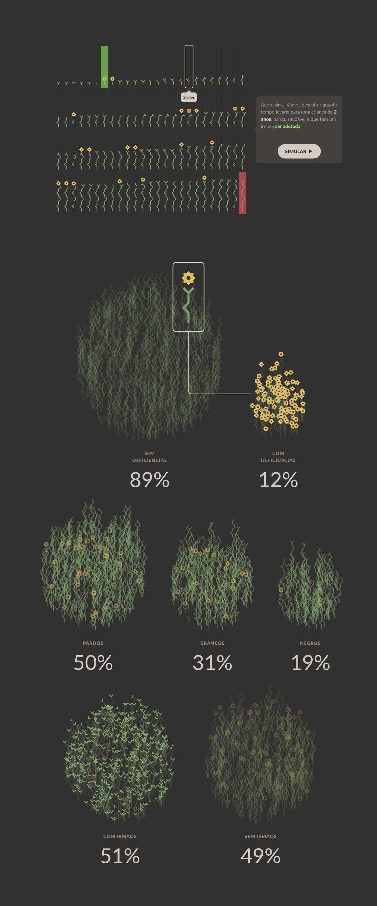

Estadão
Child Adoption Simulation 🏆

I helped Google humanize Covid-19 death data by creating No Epicentro
Case study soon ✨
My Master’s Programme in Interaction Design at Malmö University has begun!
Thanks, Swedish people 🇸🇪
I’m mentoring designers that are curious about data on adplist.org
It’s free 🤓


Your next project
could be here :)
I’m currently studying for my master’s in interaction design at Malmö University, where I try to envision nuanced behaviors between technology and humans.
Also, I recently helped a Swedish NGO on creating global-facing projects. At Datastory, we focused on turning important issues into beautiful tools, free for everyone.
Before that, at Questtonó, an innovation consultancy, I helped companies like Ambev by creating early prototypes and conducting face-to-face user research.
As a leader, I helped a team of 5 people in projects that combined data, design and web development at Estadão, a major Brazilian media company.
These were some of our projects →
The last project we created was the sole winner of the Information is Beautiful Awards 2019, in the Best Non-English category.
Back in 2017, I won an award in the same category. The story was featured on the Data Viz Today podcast and picked as the most beautiful of the year by Data Curious.
As a speaker, I talked about humanizing numbers at Dataviz.Rio and conducted workshops on how to get insights from charts at Coda.Br and Rede Globo.
Check my resume